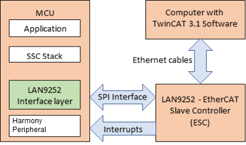
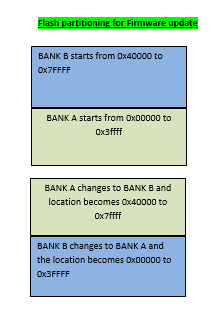
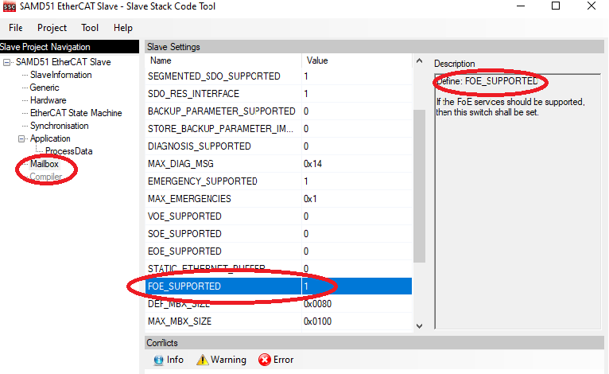

EtherCAT LAN925x Library
Ethernet for Control Automation Technology (EtherCAT) was developed by Beckhoff. EtherCAT is a fast and deterministic network, and processes data using dedicated hardware and software. It uses a full duplex, master-slave configuration.
The LAN925x is a 2/3-port EtherCAT slave controller with dual integrated Ethernet PHYs which each contain a fullduplex 100BASE-TX transceiver and support 100Mbps (100BASE-TX) operation.
EtherCAT Slave Controller Interface layer is designed for Microchip MCUs to communicate with LAN9252 EtherCAT Slave controller. This EtherCAT framework is configured with the communication interfaces (QSPI ( SPI mode), GPIO). This communication Interface layer which will acts like bridge between EtherCAT Slave Stack Code (SSC) and Host peripherals to communicate with LAN9252. SSC Stack (generated from standard SSC tool) have feature to transfer the File over EtherCAT (FoE) for MCU firmware upgrade from TwinCAT tool.

Use of the Microchip EVB-LAN9252 (and similar EtherCAT interface devices) requires use of the Beckhoff EtherCAT Slave Stack Code (SSC) and its associated configuration and code generation tool.
- The interrupts have to be configured during hardware initialization.
-
PDI Interrupt - The programmable system interrupts are generated internally by the various device sub-modules and can be configured to generate a single external host interrupt via the IRQ interrupt output pin. That is TwinCAT manager with enabled Synchron Synchronization mode.
-
DC - SYNC0 AND SYNC1 - If the application running on the SOC requires Distributed clock, then SYNC0 and SYNC1 should be connected to the microcontroller’s interrupts lines. Refer to LAN9252 datasheet for configuration of SYNC0 and SYNC1.
-
TIMER Interupt - SSC has a variable which will count every millisecond, which can be implemented either timer interrupt or polling method. The interrupt/polling mode can be selected in the SSC Tool before creating the slave stack code. SSC will access EtherCAT core registers from both interrupt context and polling mode. So, the ECAT_CSR_CMD and ECAT_CSR_DATA registers has to be protected against simultaneous access which can corrupt the state machine inside the slave stack code.
-
-
Configure of Library Configure the peripheral library using the MHC. EtherCAT Slave Device Indicators This section describes the LAN9252 driver and EtherCAT trigger and counter variables are used to support visual inspection and troubleshooting of the driver and networks.
-
PDO ( Process Data Object Trigger and Counter ) - The PDO protocol is used for communication with External interrupt IRQ.
Index Object Type Direction 1 0x6000 32bit Counter TX -
Receive PDO Mapping ( Outputs ) - The PDO protocol is used for communication with External interrupt IRQ. | Index | Object | Type | Direction | |:——:|:——-:|:—–:|:———:| |1|0x7010|32bit Counter|RX|
-
Synchronization - The Beckhoff Slave Stack Code supports different modes of synchronization which are based on three physical signals: (PDI_)IRQ, Sync0 and Sync1 Microchip EtherCAT device also supports different modes.
- Master and Slaves for synchronization: Free run The Master cycle time and Slave cycle time are independent. < This mode is Supported >
- IRQ interrupt event tiggers Master and Slave for Synchron Synchronization. < This mode is supported >
- Synchronization with distributed clocks ( Both IRQ and SYNC0 event occurs), the Master cycle time and Slave cycle time are synchronized. < This mode is supported >
-
-
Using Library
File over EtherCAT (FoE) - Architecture – Host/Slave interaction states for firmware update

FOE demostartion with respect to ATSAMD51J19A device -

-
Master changes from INIT to BOOT, then download of a file initiated. Wen state changes from INIT to BOOT, slave or the FoE application is ready to write the New FW or bin file at the BankB location. Flag gFirmwareDownload_Started set to 1.
-
Master initiates Download command with password value as 0x11223344 and bin file (this file is generated from the existing D51 foe studio project). In the slave FOE_FILEDOWNLOAD_PASSWORD is set to 0x11223344. FoE_Write() checks file name size ( limited to 16) and checks password value and then proceed to FoE_WriteData().
-
Once Master completes bin file transfer, then Master need to change the state from BOOT to INIT. In the FW application or slave code, APP_FW_GetDownloadStateFinished() changes state to gFirmwareDownload_Started = 0 and APP_FW_StateBOOTtoINIT() changes gFirmwareDownload_Finished = 1.
-
Once State changes from BOOT to INIT, Slave application initiates bank switch application(APP_BankSwitch()) and software reset(run_application()). Then Bank A moves to BANK B location and the new application stored in BANK B , moved to BANK A with flash location 0x0. The new application starts running from flash location 0x0 and will be ready with new application.
SSC tool FoE configuration -

-
Legal Please review the Software License Agreement (mplab_harmony_license.txt) prior to using MPLAB Harmony. It is the responsibility of the end-user to know and understand the software license agreement terms regarding the Microchip and third-party software that is provided in this installation. A copy of the agreement is available in the ethercat/doc folder of your MPLAB Harmony installation